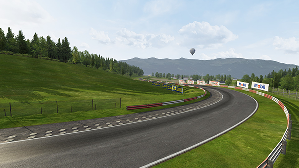

GENTLEMAN
DRIVERS
PROJECT
DRIVERS
PROJECT
INTERNATIONAL SERIES · LOLA T290
oesterreichring1979 et actk_lola_t290.


ai/fast_lane.aiRègles physiques appliquées automatiquement par le serveur Assetto Corsa sur ce circuit :
| Surface | Adhérence | Statut serveur | Comportement |
|---|
Aperçu de ce que l'onglet affichera automatiquement dès qu'une qualification ou course aura été importée depuis AssettoHosting :
| Secteur | Bornes | Portions clés | Meilleur partiel (Démo) |
|---|---|---|---|
| Secteur 1 | 0 → 1 552 m (26 %) | Rampe stands, Hella-Licht 'S', Flatschach | 28.412 51R Sherman |
| Secteur 2 | 1 552 → 4 585 m (52 %) | Dr Tirok, Valvoline, Bosch, Texaco | 54.188 Kimy Hoyer |
| Secteur 3 | 4 585 → 5 901 m (22 %) | Raiffeisenhügel, Jochen Rindt, Arrivée | 21.890 fmherrou |
| Tour optimal théorique (S1+S2+S3) | Vitesse moy. : 203,3 km/h | 1:44.490 | |
WorldPosition) est automatiquement rattaché au nom du virage.Prototype Groupe 6 — Championnat du monde des voitures de sport 1972. Conçue par Eric Broadley, la T290 a marqué l'ère des prototypes 2 litres avant l'arrivée des voitures à effet de sol.
📥 Télécharger le mod (Drive) 🔍 Agrandir
🔍 Agrandir
260 bhp Cosworth FVC / Vega 4 cylindres
Injection Lucas
230 Nm à 7 000 tr/min
Boîte Hewland 5 rapports
610 kg minimum réglementaire
Rapport 2,41 kg/cv
280+ km/h sur les longues lignes droites
Freins 4 disques
À la fin de la saison 1969, Lola réalise que sa T70 Coupe ne fait plus le poids face aux Porsche et Ferrari. Eric Broadley se tourne alors vers la classe Groupe 6 de 2 litres. Pour 1970, le Championnat d'Europe des Sportscars est créé spécialement pour ces prototypes.
Lola propose la T290 sans moteur, laissant les clients choisir leur moteur. Cosworth était le fournisseur préféré : le FVC éprouvé (1 790 cc) ou le tout nouveau moteur basé sur le Chevrolet Vega. Certaines équipes ont développé des versions plus grosses du FVC, tandis que Cosworth travaillait sur le BDG de 2 litres. Quelle que soit le choix, une boîte Hewland 5 vitesses équipait toutes les voitures.
Aucune des 34 T290 construites en 1972 n'a remporté le championnat, mais elles ont gagné des courses et des championnats partout dans le monde. L'Abarth-Osella d'Arturo Merzario a remporté le titre européen, mais les T290 sont restées très performantes.
Chaque pilote dispose d'une livrée dédiée dans le dossier actk_lola_t290/skins/. La photo ci-dessous est le preview.jpg extrait de chaque skin.
Les pilotes sont regroupés par équipe selon le champ team de chaque ui_skin.json.